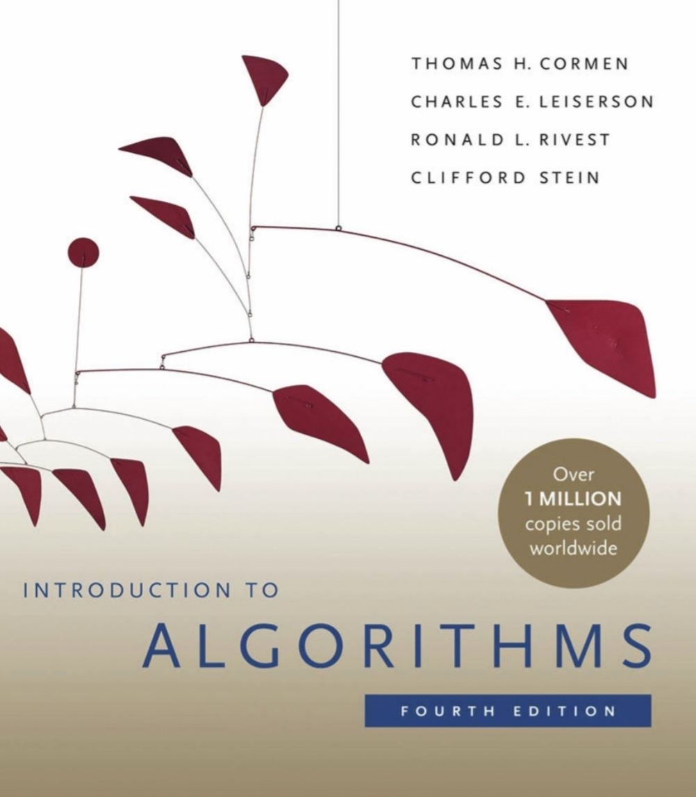

Analysis of design and algorithm
About this Subject
The Analysis and Design of Algorithms is a fundamental subject in computer science that focuses on
developing efficient solutions to computational problems. It involves:
1. Algorithm Design:Creating step-by-step procedures to solve problems optimally. Common techniques
include:
- Divide and Conquer(e.g., Merge Sort, Quick Sort)
- Greedy Algorithms(e.g., Dijkstra’s Algorithm, Kruskal’s Algorithm)
- Dynamic Programming(e.g., Fibonacci Sequence, Knapsack Problem)
- Backtracking and Branch & Bound(e.g., N-Queens Problem, Traveling Salesman Problem)
2. Algorithm Analysis:Evaluating the performance of algorithms in terms of time complexity (Big-O
notation) and space complexity to ensure scalability and efficiency.
3. Complexity Classes:Understanding different problem categories such as P, NP, NP-Hard, and
NP-Complete, which help in determining problem-solving feasibility.
This subject is essential for optimizing applications, solving real-world computational problems, and preparing
for coding interviews.
Syllabus
Total Hrs.: 42
Unit-1 [No. of Hrs.: 8]
Preliminaries: Data Abstraction, Data Modelling and Data Representation Review of growth of functions, Recurrences:
The substitution method, The recursion-tree method, The master method, Data Structures for Disjoint Sets. Lists
(static and Dynamic), Random va Sequential Access, Restricted Access Lists. Disjoint Forests, Rabin-Karp Algorithm.
Sorting and order statistics: Heap Sort, Sorting in linear time, Medians and Order statistics.
Unit-2 [No. of Hrs.: 8]
Divide and Conquer: General Method, Binary search, finding minimum and maximum, merge sort, quick sort. Fractional
Knapsack Problem, Activity selection Problem
Dynamic Programming: Dynamic Allocation, Recursive and iterative implementation of repetition, Recursive data
definitions. Elements of Dynamic Programming, Matrix Chain Multiplication, Longest common subsequence and optimal
binary search trees problems.
Unit-3 [No. of Hrs.: 9]
Greedy Algorithms: Complexity model for algorithm. Complexity Ananlysis, Performance measurements and Model,
Modeling with tree, Binary Trees and Tree TraversalsElements of Greedy strategy, An activity selection problem,
Huffman Codes, Matroids and greedy methods A task scheduling problem.
Back Tracking: R the General Method, The 8-queens problem, Sum of subsets, Graph coloring, Hamiltonian cycle,
Knapsqck problem.
Unit-4 [No. of Hrs.: 9]
Branch and Bound: Methods – least cost search, The 15-puzzle, Bounding, FIFO branch and bound, 0/1 Knapsack problem
String matching: The Naïve String-Matching algorithm, The Rabin-Karp Algorithm, String Understand tiem complexity
and space complexity measures, analyze simple algorithms and data structures for time and space requirements.
matching with finite automata, The Knuth-Morris Pratt algorithm.
Unit-5 [No. of Hrs.: 8]
Complexity Theory: Time and Space measures, Hierarchy theorems, Complexity classes P, NP, L, NL, PSPACE, BPP and IP,
complete problems, P versus NP conjecture, quantiers and games, provably hard problems, relativized computation and
oracles, probabilistic computation, interactive proof systems.
Text Book
[T1] Ellis Horowitz and Sartaz Sahani, “Computer Algorithms”, Galgotia Publications
Reference Book
[R1] T.H. Cormen, C. E. Leiserson, R. L. Rivest, Clifford Stein, “Introduction to Algorithms”, PHI.
